Θέμα 302 (Seq 1)
Σύνολο εικόνων/πινάκων: 5
Σε ποια από τις παρακάτω καταστάσεις χρησιμοποιείται η πενικιλλαμίνη:
📷 ΚΛΙΝΙΚΗ ΕΙΚΟΝΑ / ΦΩΤΟΓΡΑΦΙΑ
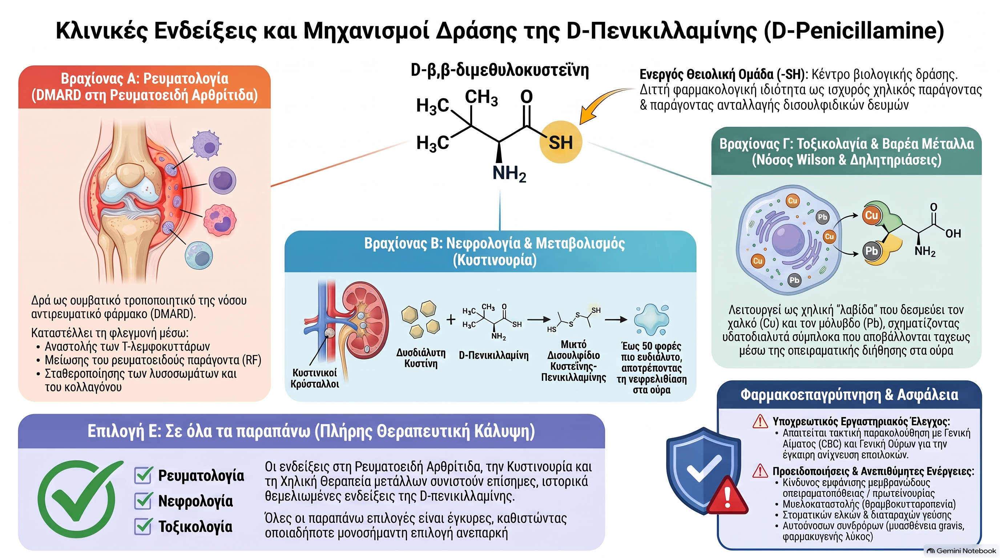
Κλινικές_Ενδείξεις_D-Πενικιλλαμίνης.png
📊 ΠΛΗΡΟΦΟΡΙΑΚΟ ΔΙΑΓΡΑΜΜΑ
Κλινικές_Ενδείξεις_D-Πενικιλλαμίνης.png
📋 ΠΙΝΑΚΑΣ / ΣΧΗΜΑ (M5_Q302_TAB_01.png)
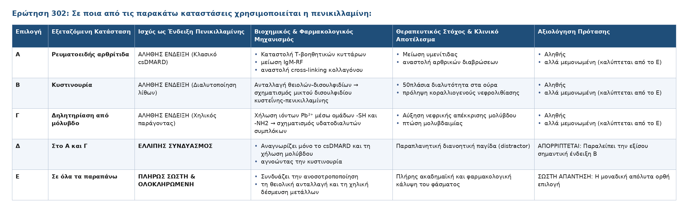
M5_Q302_TAB_01.png
📋 ΠΙΝΑΚΑΣ / ΣΧΗΜΑ (M5_Q302_TAB_02.png)
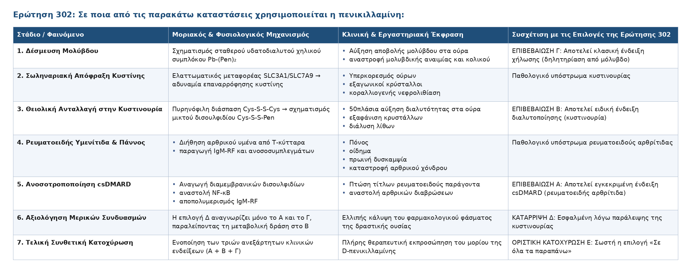
M5_Q302_TAB_02.png
📋 ΠΙΝΑΚΑΣ / ΣΧΗΜΑ (M5_Q302_TAB_03.png)

M5_Q302_TAB_03.png
Θέμα 303 (Seq 2)
Σύνολο εικόνων/πινάκων: 5
Σε ποια από τις παρακάτω καταστάσεις δυνατό να παρατηρείται πάρεση προσωπικού:
📷 ΚΛΙΝΙΚΗ ΕΙΚΟΝΑ / ΦΩΤΟΓΡΑΦΙΑ
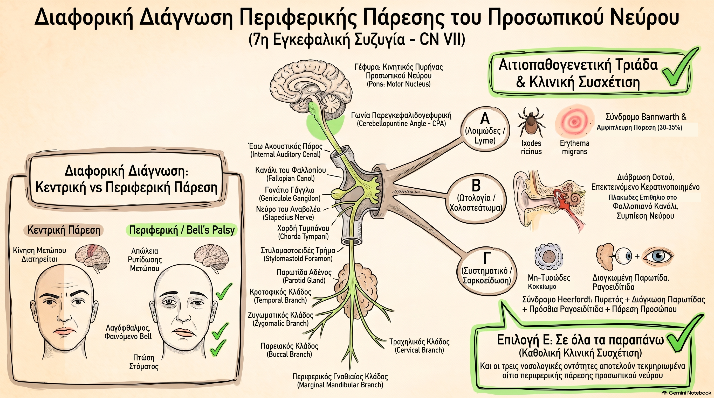
Διαφορική_Διάγνωση_Πάρεσης_Προσωπικού_Νεύρου.png
📊 ΠΛΗΡΟΦΟΡΙΑΚΟ ΔΙΑΓΡΑΜΜΑ
Διαφορική_Διάγνωση_Πάρεσης_Προσωπικού_Νεύρου.png
📋 ΠΙΝΑΚΑΣ / ΣΧΗΜΑ (M5_Q303_TAB_01.png)
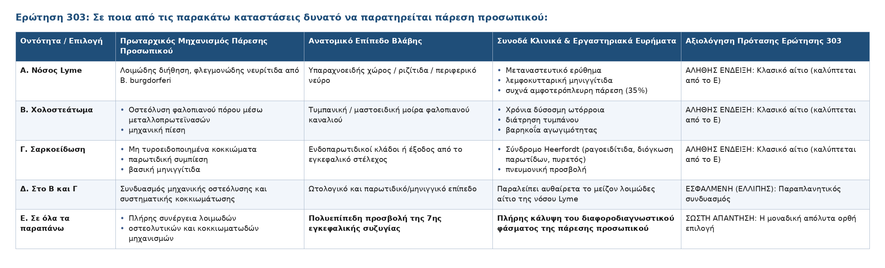
M5_Q303_TAB_01.png
📋 ΠΙΝΑΚΑΣ / ΣΧΗΜΑ (M5_Q303_TAB_02.png)
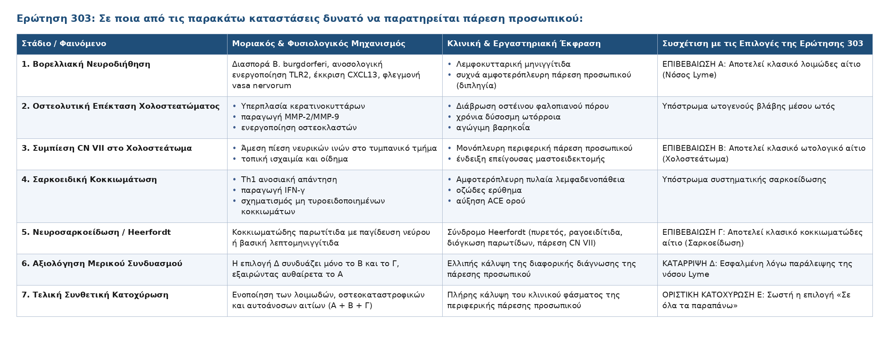
M5_Q303_TAB_02.png
📋 ΠΙΝΑΚΑΣ / ΣΧΗΜΑ (M5_Q303_TAB_03.png)
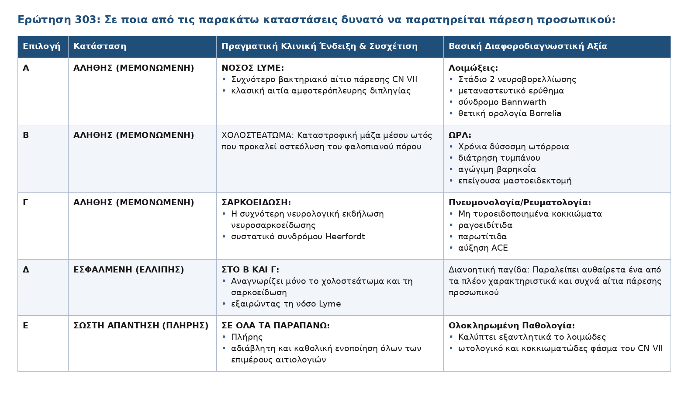
M5_Q303_TAB_03.png
Θέμα 304 (Seq 3)
Σύνολο εικόνων/πινάκων: 5
Οξύ κοιλιακό άλγος παρατηρείται τυπικά σε:
📷 ΚΛΙΝΙΚΗ ΕΙΚΟΝΑ / ΦΩΤΟΓΡΑΦΙΑ
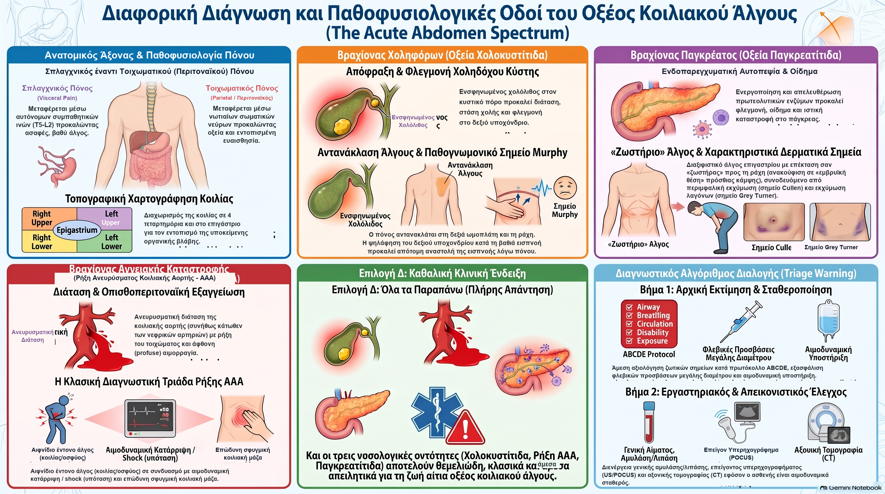
Διαφορική_διάγνωση_οξέος_κοιλιακού_άλγους.png
📊 ΠΛΗΡΟΦΟΡΙΑΚΟ ΔΙΑΓΡΑΜΜΑ
Διαφορική_διάγνωση_οξέος_κοιλιακού_άλγους.png
📋 ΠΙΝΑΚΑΣ / ΣΧΗΜΑ (M5_Q304_TAB_01.png)
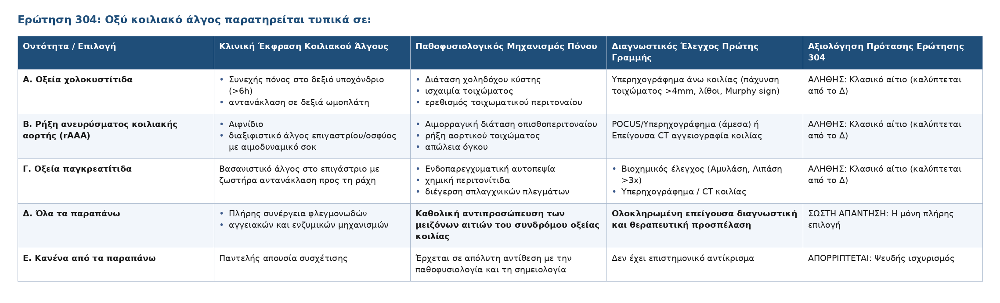
M5_Q304_TAB_01.png
📋 ΠΙΝΑΚΑΣ / ΣΧΗΜΑ (M5_Q304_TAB_02.png)

M5_Q304_TAB_02.png
📋 ΠΙΝΑΚΑΣ / ΣΧΗΜΑ (M5_Q304_TAB_03.png)
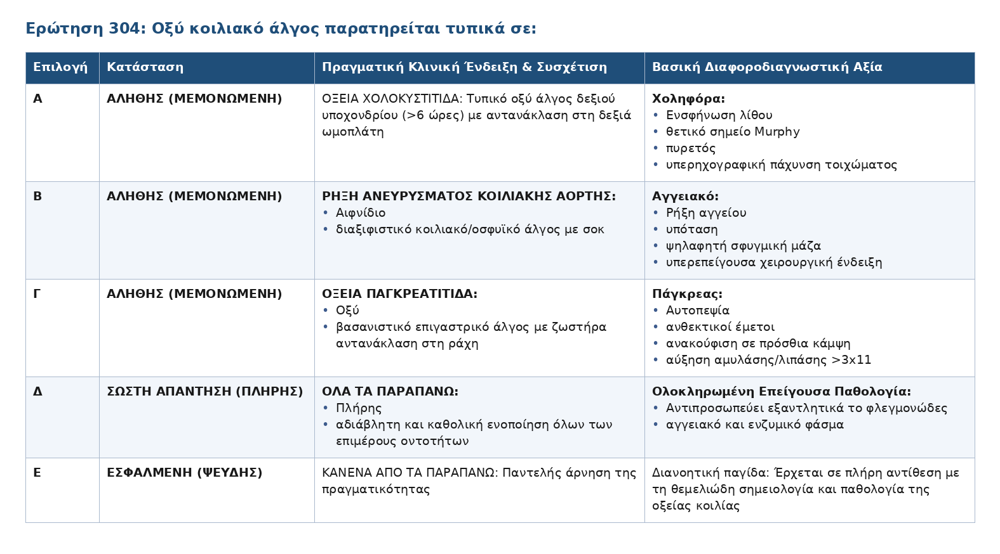
M5_Q304_TAB_03.png
Θέμα 305 (Seq 4)
Σύνολο εικόνων/πινάκων: 5
Διάρροια συχνά παρατηρείται σε:
📷 ΚΛΙΝΙΚΗ ΕΙΚΟΝΑ / ΦΩΤΟΓΡΑΦΙΑ
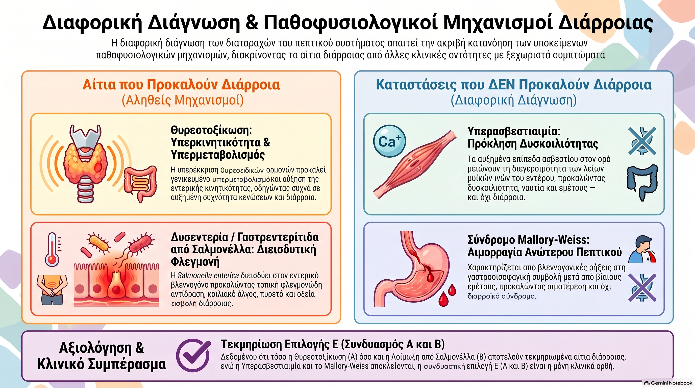
Διαφορική_Διάγνωση_και_Αίτια_Διάρροιας.png
📊 ΠΛΗΡΟΦΟΡΙΑΚΟ ΔΙΑΓΡΑΜΜΑ
.png)
Διαφορική_Διάγνωση_και_Αίτια_Διάρροιας (1).png
📋 ΠΙΝΑΚΑΣ / ΣΧΗΜΑ (M5_Q305_TAB_01.png)

M5_Q305_TAB_01.png
📋 ΠΙΝΑΚΑΣ / ΣΧΗΜΑ (M5_Q305_TAB_02.png)
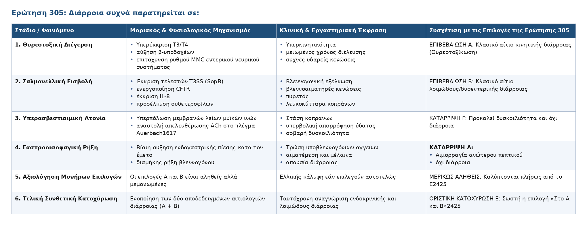
M5_Q305_TAB_02.png
📋 ΠΙΝΑΚΑΣ / ΣΧΗΜΑ (M5_Q305_TAB_03.png)

M5_Q305_TAB_03.png
Θέμα 306 (Seq 5)
Σύνολο εικόνων/πινάκων: 5
Ποιο από τα παρακάτω αποτελούν χαρακτηριστικά του υποθυρεοειδισμού:
📷 ΚΛΙΝΙΚΗ ΕΙΚΟΝΑ / ΦΩΤΟΓΡΑΦΙΑ

Χαρακτηριστικά_του_Υποθυρεοειδισμού.png
📊 ΠΛΗΡΟΦΟΡΙΑΚΟ ΔΙΑΓΡΑΜΜΑ

Παθοφυσιολογία_και_Εκδηλώσεις_του_Υποθυρεοειδισμού.png
📋 ΠΙΝΑΚΑΣ / ΣΧΗΜΑ (M5_Q306_TAB_01.png)
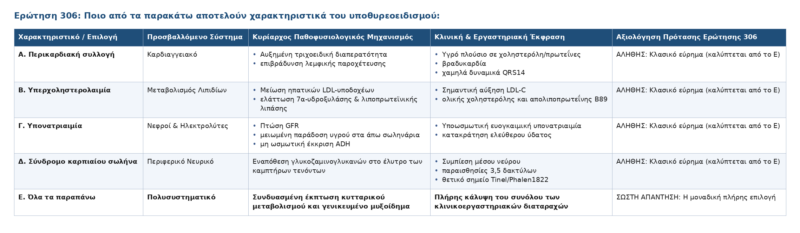
M5_Q306_TAB_01.png
📋 ΠΙΝΑΚΑΣ / ΣΧΗΜΑ (M5_Q306_TAB_02.png)
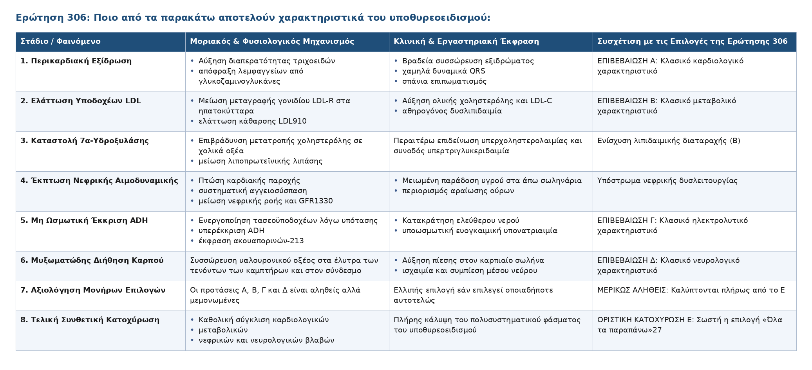
M5_Q306_TAB_02.png
📋 ΠΙΝΑΚΑΣ / ΣΧΗΜΑ (M5_Q306_TAB_03.png)

M5_Q306_TAB_03.png
Θέμα 306 (Seq 6)
Σύνολο εικόνων/πινάκων: 5
Ποιο από τα παρακάτω αποτελούν χαρακτηριστικά του υποθυρεοειδισμού:
📷 ΚΛΙΝΙΚΗ ΕΙΚΟΝΑ / ΦΩΤΟΓΡΑΦΙΑ
Χαρακτηριστικά_του_Υποθυρεοειδισμού.png
📊 ΠΛΗΡΟΦΟΡΙΑΚΟ ΔΙΑΓΡΑΜΜΑ
Παθοφυσιολογία_και_Εκδηλώσεις_του_Υποθυρεοειδισμού.png
📋 ΠΙΝΑΚΑΣ / ΣΧΗΜΑ (M5_Q306B_TAB_01.png)
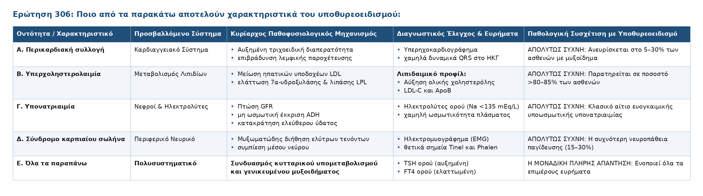
M5_Q306B_TAB_01.png
📋 ΠΙΝΑΚΑΣ / ΣΧΗΜΑ (M5_Q306B_TAB_02.png)
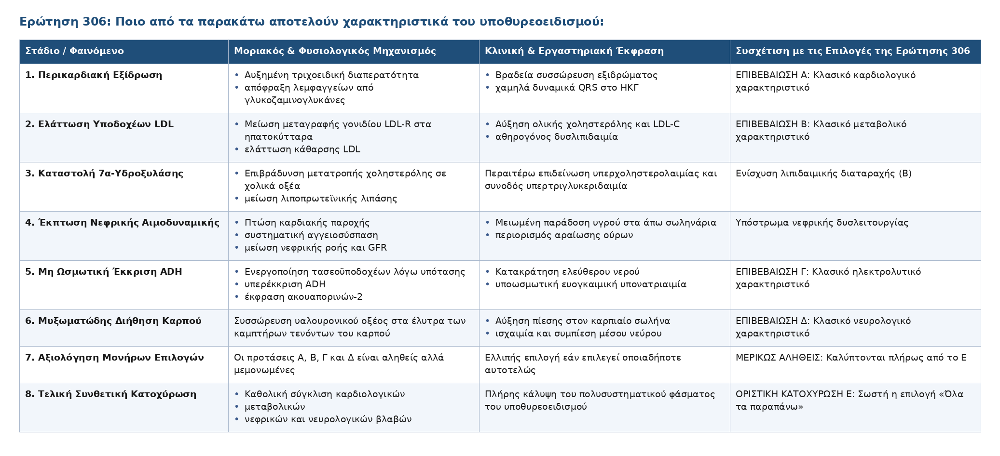
M5_Q306B_TAB_02.png
📋 ΠΙΝΑΚΑΣ / ΣΧΗΜΑ (M5_Q306B_TAB_03.png)

M5_Q306B_TAB_03.png
Θέμα 307 (Seq 7)
Σύνολο εικόνων/πινάκων: 5
Ποιο από τα παρακάτω δεν αποτελεί χαρακτηριστικό της πρωτοπαθούς επινεφριδιακής ανεπάρκειας
📷 ΚΛΙΝΙΚΗ ΕΙΚΟΝΑ / ΦΩΤΟΓΡΑΦΙΑ

Πρωτοπαθής_Επινεφριδιακή_Ανεπάρκεια_και_Διαφορική_Διάγνωση.png
📊 ΠΛΗΡΟΦΟΡΙΑΚΟ ΔΙΑΓΡΑΜΜΑ
Πρωτοπαθής_Επινεφριδιακή_Ανεπάρκεια_και_Διαφορική_Διάγνωση.png
📋 ΠΙΝΑΚΑΣ / ΣΧΗΜΑ (M5_Q307_TAB_01.png)

M5_Q307_TAB_01.png
📋 ΠΙΝΑΚΑΣ / ΣΧΗΜΑ (M5_Q307_TAB_02.png)
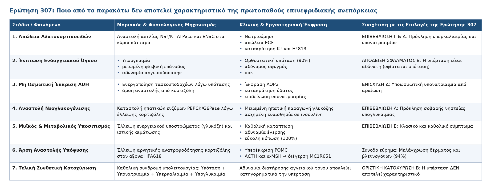
M5_Q307_TAB_02.png
📋 ΠΙΝΑΚΑΣ / ΣΧΗΜΑ (M5_Q307_TAB_03.png)

M5_Q307_TAB_03.png
Θέμα 308 (Seq 8)
Σύνολο εικόνων/πινάκων: 5
Εμφάνιση δερματικού εξανθήματος παρατηρείται τυπικά σε όλα τα παρακάτω εκτός από ένα:
📷 ΚΛΙΝΙΚΗ ΕΙΚΟΝΑ / ΦΩΤΟΓΡΑΦΙΑ

Διαφορική_Διάγνωση_Δερματικών_Εξανθημάτων.png
📊 ΠΛΗΡΟΦΟΡΙΑΚΟ ΔΙΑΓΡΑΜΜΑ
Διαφορική_Διάγνωση_Δερματικών_Εξανθημάτων.png
📋 ΠΙΝΑΚΑΣ / ΣΧΗΜΑ (M5_Q308_TAB_01.png)
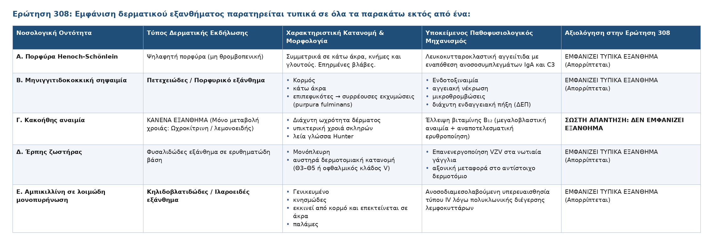
M5_Q308_TAB_01.png
📋 ΠΙΝΑΚΑΣ / ΣΧΗΜΑ (M5_Q308_TAB_02.png)
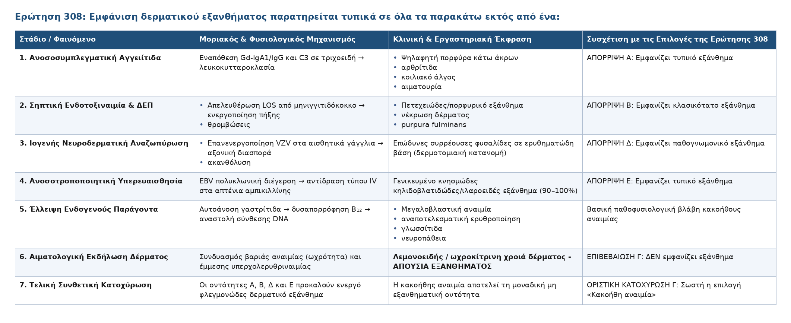
M5_Q308_TAB_02.png
📋 ΠΙΝΑΚΑΣ / ΣΧΗΜΑ (M5_Q308_TAB_03.png)
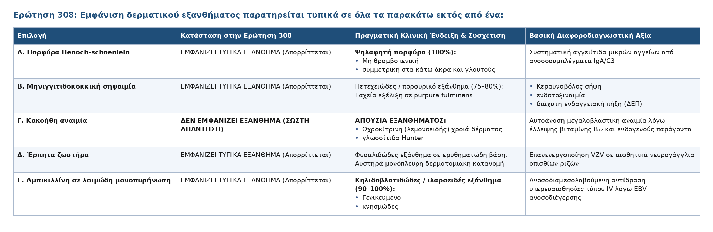
M5_Q308_TAB_03.png
Θέμα 309 (Seq 9)
Σύνολο εικόνων/πινάκων: 5
Πολυουρία προκαλούν όλα τα παρακάτω, εκτός από ένα:
📷 ΚΛΙΝΙΚΗ ΕΙΚΟΝΑ / ΦΩΤΟΓΡΑΦΙΑ
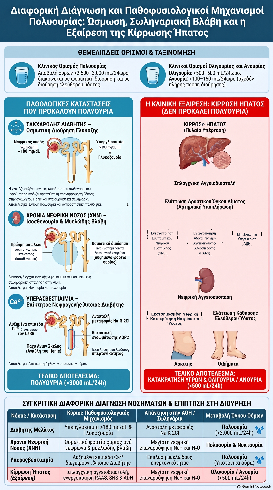
Διαφορική_Διάγνωση_και_Παθοφυσιολογία_Πολυουρίας.png
📊 ΠΛΗΡΟΦΟΡΙΑΚΟ ΔΙΑΓΡΑΜΜΑ
Διαφορική_Διάγνωση_και_Παθοφυσιολογία_Πολυουρίας.png
📋 ΠΙΝΑΚΑΣ / ΣΧΗΜΑ (M5_Q309_TAB_01.png)

M5_Q309_TAB_01.png
📋 ΠΙΝΑΚΑΣ / ΣΧΗΜΑ (M5_Q309_TAB_02.png)

M5_Q309_TAB_02.png
📋 ΠΙΝΑΚΑΣ / ΣΧΗΜΑ (M5_Q309_TAB_03.png)

M5_Q309_TAB_03.png
Θέμα 310 (Seq 10)
Σύνολο εικόνων/πινάκων: 5
Η βραδυκαρδία είναι σημείο:
📷 ΚΛΙΝΙΚΗ ΕΙΚΟΝΑ / ΦΩΤΟΓΡΑΦΙΑ
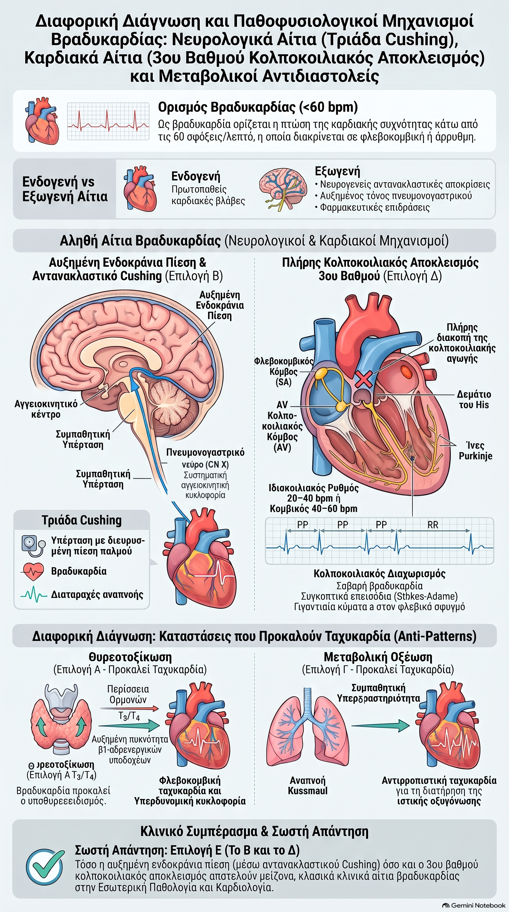
Διαφορική_Διάγνωση_και_Μηχανισμοί_Βραδυκαρδίας.png
📊 ΠΛΗΡΟΦΟΡΙΑΚΟ ΔΙΑΓΡΑΜΜΑ
Διαφορική_Διάγνωση_και_Μηχανισμοί_Βραδυκαρδίας.png
📋 ΠΙΝΑΚΑΣ / ΣΧΗΜΑ (M5_Q310_TAB_01.png)
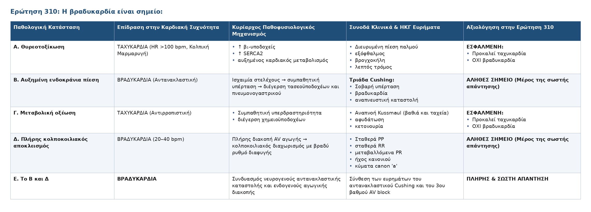
M5_Q310_TAB_01.png
📋 ΠΙΝΑΚΑΣ / ΣΧΗΜΑ (M5_Q310_TAB_02.png)
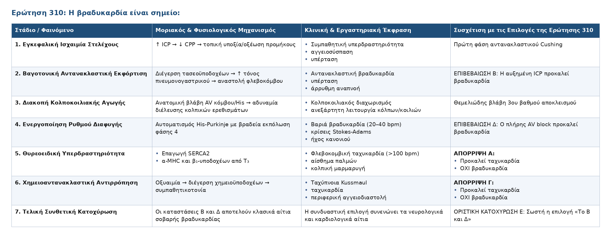
M5_Q310_TAB_02.png
📋 ΠΙΝΑΚΑΣ / ΣΧΗΜΑ (M5_Q310_TAB_03.png)

M5_Q310_TAB_03.png
Θέμα 311 (Seq 11)
Σύνολο εικόνων/πινάκων: 5
Ποιο από τα παρακάτω δεν συσχετίζεται αιτιοπαθογενετικά με το νεφρωσικό σύνδρομο:
📷 ΚΛΙΝΙΚΗ ΕΙΚΟΝΑ / ΦΩΤΟΓΡΑΦΙΑ
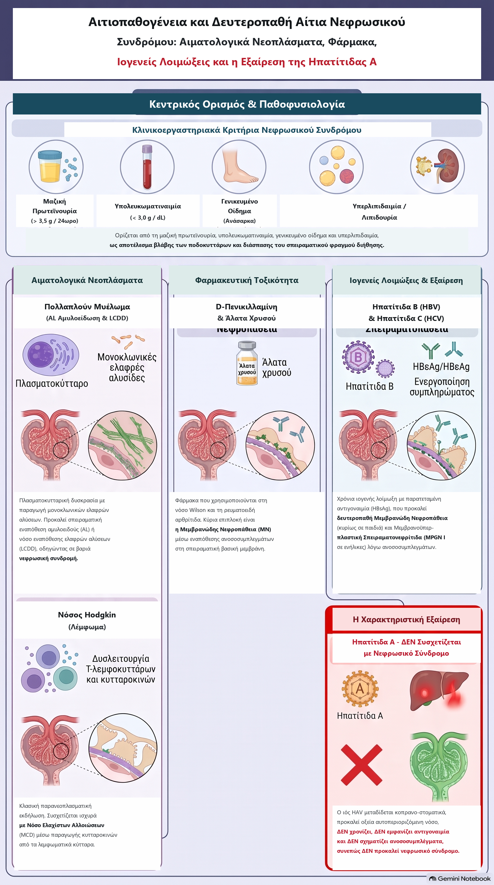
Αίτια_και_Παθοφυσιολογία_Νεφρωσικού_Συνδρόμου.png
📊 ΠΛΗΡΟΦΟΡΙΑΚΟ ΔΙΑΓΡΑΜΜΑ
Αίτια_και_Παθοφυσιολογία_Νεφρωσικού_Συνδρόμου.png
📋 ΠΙΝΑΚΑΣ / ΣΧΗΜΑ (M5_Q311_TAB_01.png)

M5_Q311_TAB_01.png
📋 ΠΙΝΑΚΑΣ / ΣΧΗΜΑ (M5_Q311_TAB_02.png)
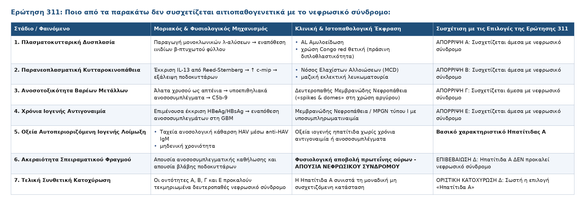
M5_Q311_TAB_02.png
📋 ΠΙΝΑΚΑΣ / ΣΧΗΜΑ (M5_Q311_TAB_03.png)

M5_Q311_TAB_03.png
Θέμα 312 (Seq 12)
Σύνολο εικόνων/πινάκων: 5
Ποιο από τα παρακάτω δεν συσχετίζεται αιτιοπαθογενετικά με το νεφρωσικό σύνδρομο:
📷 ΚΛΙΝΙΚΗ ΕΙΚΟΝΑ / ΦΩΤΟΓΡΑΦΙΑ
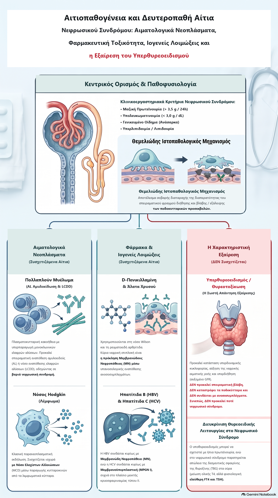
Αίτια_Νεφρωσικού_Συνδρόμου_και_Εξαιρέσεις.png
📊 ΠΛΗΡΟΦΟΡΙΑΚΟ ΔΙΑΓΡΑΜΜΑ
Αίτια_Νεφρωσικού_Συνδρόμου_και_Εξαιρέσεις.png
📋 ΠΙΝΑΚΑΣ / ΣΧΗΜΑ (M5_Q312_TAB_01.png)

M5_Q312_TAB_01.png
📋 ΠΙΝΑΚΑΣ / ΣΧΗΜΑ (M5_Q312_TAB_02.png)
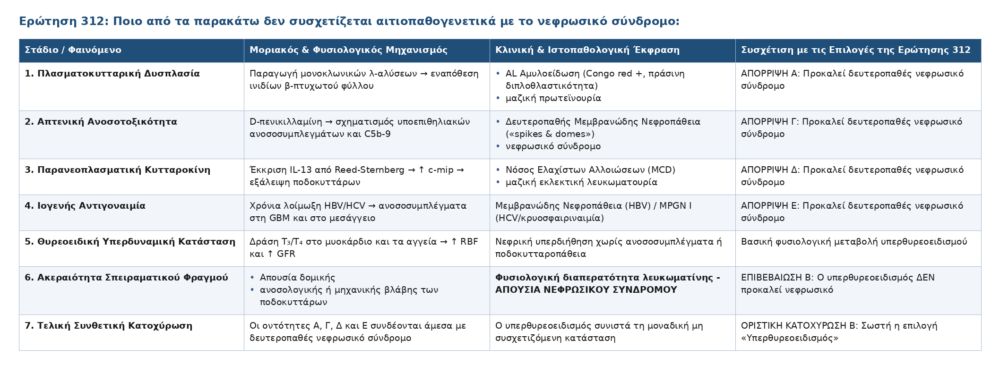
M5_Q312_TAB_02.png
📋 ΠΙΝΑΚΑΣ / ΣΧΗΜΑ (M5_Q312_TAB_03.png)
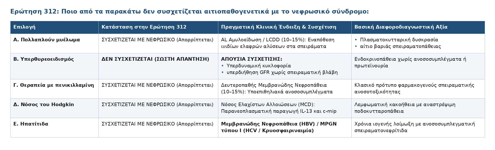
M5_Q312_TAB_03.png
Θέμα 313 (Seq 13)
Σύνολο εικόνων/πινάκων: 5
Ποια από τις παρακάτω καταστάσεις συνοδεύεται συχνά από πυρετό:
📷 ΚΛΙΝΙΚΗ ΕΙΚΟΝΑ / ΦΩΤΟΓΡΑΦΙΑ
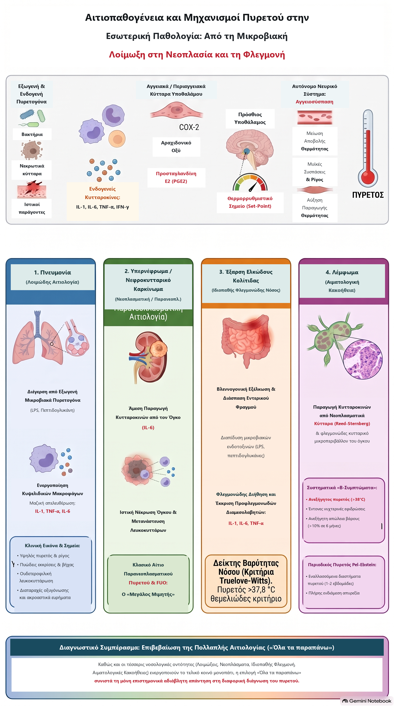
Αιτιοπαθογένεια_και_Μηχανισμοί_Πυρετού.png
📊 ΠΛΗΡΟΦΟΡΙΑΚΟ ΔΙΑΓΡΑΜΜΑ
.png)
Αιτιοπαθογένεια_και_μηχανισμοί_πυρετού (1).png
📋 ΠΙΝΑΚΑΣ / ΣΧΗΜΑ (M5_Q313_TAB_01.png)
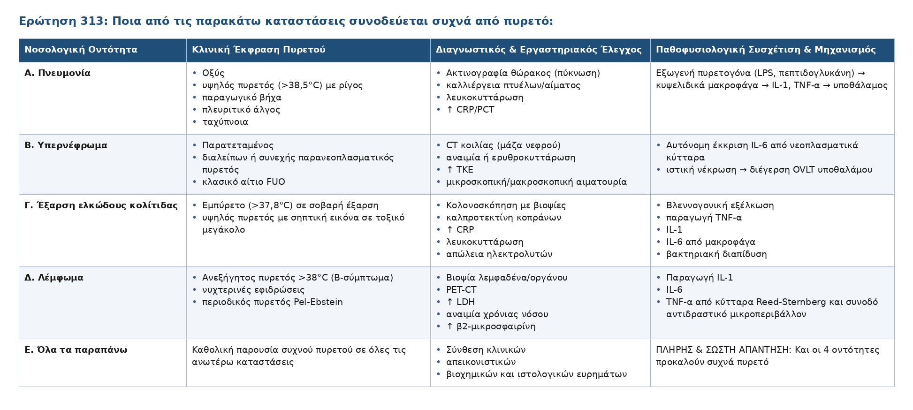
M5_Q313_TAB_01.png
📋 ΠΙΝΑΚΑΣ / ΣΧΗΜΑ (M5_Q313_TAB_02.png)

M5_Q313_TAB_02.png
📋 ΠΙΝΑΚΑΣ / ΣΧΗΜΑ (M5_Q313_TAB_03.png)

M5_Q313_TAB_03.png
Θέμα 314 (Seq 14)
Σύνολο εικόνων/πινάκων: 5
Ποια από τις παρακάτω καταστάσεις συνοδεύεται συχνά από πυρετό:
📷 ΚΛΙΝΙΚΗ ΕΙΚΟΝΑ / ΦΩΤΟΓΡΑΦΙΑ
Αιτιοπαθογένεια_και_Μηχανισμοί_Πυρετού.png
📊 ΠΛΗΡΟΦΟΡΙΑΚΟ ΔΙΑΓΡΑΜΜΑ
Αιτιοπαθογένεια_και_Μηχανισμοί_Πυρετού.png
📋 ΠΙΝΑΚΑΣ / ΣΧΗΜΑ (M5_Q314_TAB_01.png)

M5_Q314_TAB_01.png
📋 ΠΙΝΑΚΑΣ / ΣΧΗΜΑ (M5_Q314_TAB_02.png)
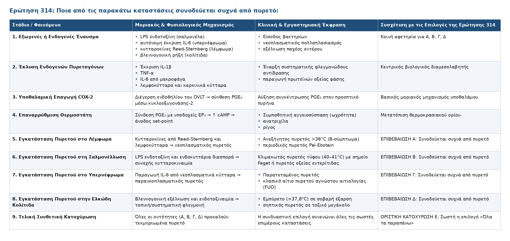
M5_Q314_TAB_02.png
📋 ΠΙΝΑΚΑΣ / ΣΧΗΜΑ (M5_Q314_TAB_03.png)
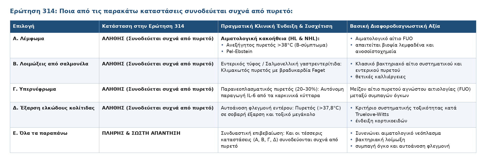
M5_Q314_TAB_03.png
Θέμα 315 (Seq 15)
Σύνολο εικόνων/πινάκων: 5
Χαμηλή συγκέντρωση διττανθρακικών στον ορό παρατηρείται χαρακτηριστικά σε όλες τις παρακάτω καταστάσεις εκτός από μία:
📷 ΚΛΙΝΙΚΗ ΕΙΚΟΝΑ / ΦΩΤΟΓΡΑΦΙΑ
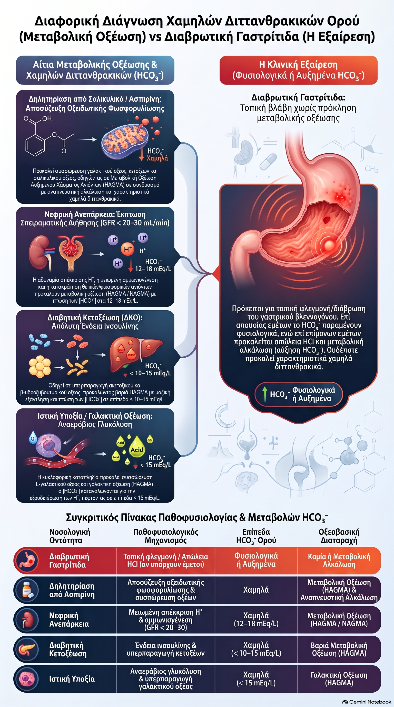
Διαφορική_Διάγνωση_Χαμηλών_Διττανθρακικών_Ορού.png
📊 ΠΛΗΡΟΦΟΡΙΑΚΟ ΔΙΑΓΡΑΜΜΑ
Διαφορική_Διάγνωση_Χαμηλών_Διττανθρακικών_Ορού.png
📋 ΠΙΝΑΚΑΣ / ΣΧΗΜΑ (M5_Q315_TAB_01.png)

M5_Q315_TAB_01.png
📋 ΠΙΝΑΚΑΣ / ΣΧΗΜΑ (M5_Q315_TAB_02.png)

M5_Q315_TAB_02.png
📋 ΠΙΝΑΚΑΣ / ΣΧΗΜΑ (M5_Q315_TAB_03.png)
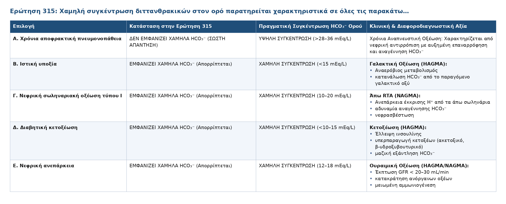
M5_Q315_TAB_03.png
Θέμα 316 (Seq 16)
Σύνολο εικόνων/πινάκων: 5
Χαμηλή συγκέντρωση διττανθρακικών στον ορό παρατηρείται χαρακτηριστικά σε όλες τις παρακάτω καταστάσεις εκτός από μία:
📷 ΚΛΙΝΙΚΗ ΕΙΚΟΝΑ / ΦΩΤΟΓΡΑΦΙΑ
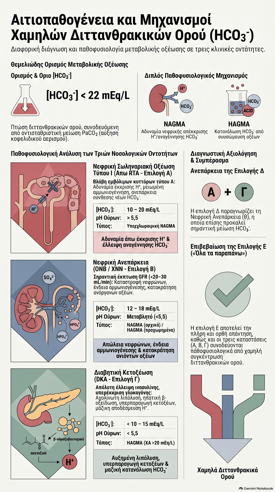
Μηχανισμοί_Χαμηλών_Διττανθρακικών_Ορού.png
📊 ΠΛΗΡΟΦΟΡΙΑΚΟ ΔΙΑΓΡΑΜΜΑ
Μηχανισμοί_Χαμηλών_Διττανθρακικών_Ορού.png
📋 ΠΙΝΑΚΑΣ / ΣΧΗΜΑ (M5_Q316_TAB_01.png)

M5_Q316_TAB_01.png
📋 ΠΙΝΑΚΑΣ / ΣΧΗΜΑ (M5_Q316_TAB_02.png)

M5_Q316_TAB_02.png
📋 ΠΙΝΑΚΑΣ / ΣΧΗΜΑ (M5_Q316_TAB_03.png)
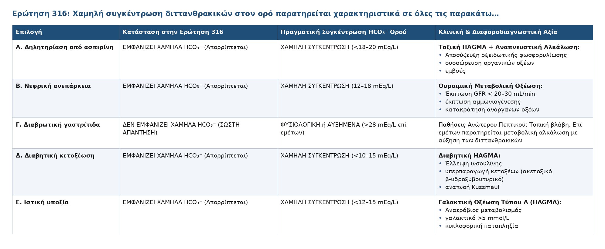
M5_Q316_TAB_03.png
Θέμα 317 (Seq 17)
Σύνολο εικόνων/πινάκων: 5
Χαμηλή συγκέντρωση διττανθρακικών στον ορό παρατηρείται σε:
📷 ΚΛΙΝΙΚΗ ΕΙΚΟΝΑ / ΦΩΤΟΓΡΑΦΙΑ
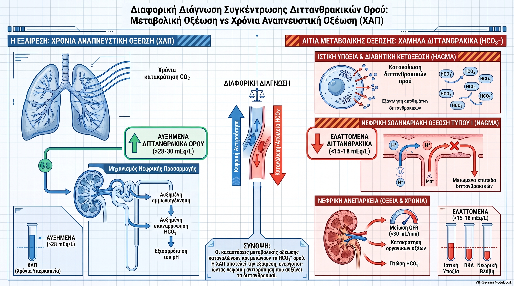
Διαφορική_Διάγνωση_Συγκέντρωσης_Διττανθρακικών_Ορού.png
📊 ΠΛΗΡΟΦΟΡΙΑΚΟ ΔΙΑΓΡΑΜΜΑ
Διαφορική_Διάγνωση_Συγκέντρωσης_Διττανθρακικών_Ορού.png
📋 ΠΙΝΑΚΑΣ / ΣΧΗΜΑ (M5_Q317_TAB_01.png)
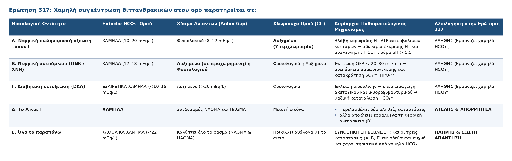
M5_Q317_TAB_01.png
📋 ΠΙΝΑΚΑΣ / ΣΧΗΜΑ (M5_Q317_TAB_02.png)
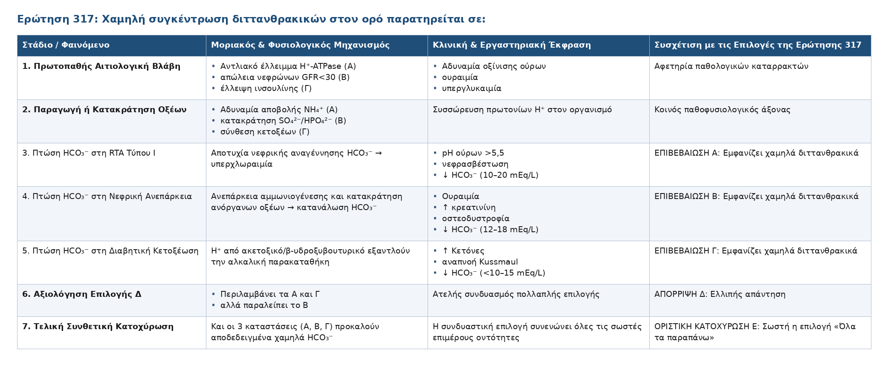
M5_Q317_TAB_02.png
📋 ΠΙΝΑΚΑΣ / ΣΧΗΜΑ (M5_Q317_TAB_03.png)
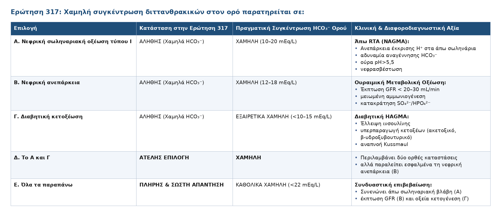
M5_Q317_TAB_03.png
Θέμα 318 (Seq 18)
Σύνολο εικόνων/πινάκων: 5
Υψηλή συγκέντρωση διττανθρακικών στον ορό παρατηρείται σε:
📷 ΚΛΙΝΙΚΗ ΕΙΚΟΝΑ / ΦΩΤΟΓΡΑΦΙΑ
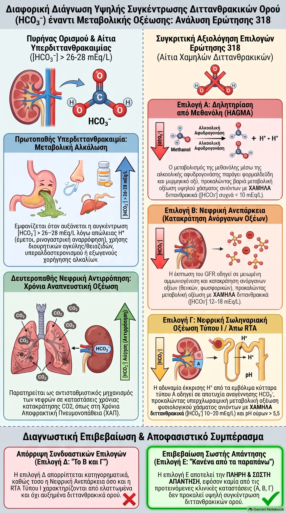
Διαφορική_Διάγνωση_Υψηλής_Συγκέντρωσης_Διττανθρακικών.png
📊 ΠΛΗΡΟΦΟΡΙΑΚΟ ΔΙΑΓΡΑΜΜΑ
Διαφορική_Διάγνωση_Υψηλής_Συγκέντρωσης_Διττανθρακικών.png
📋 ΠΙΝΑΚΑΣ / ΣΧΗΜΑ (M5_Q318_TAB_01.png)

M5_Q318_TAB_01.png
📋 ΠΙΝΑΚΑΣ / ΣΧΗΜΑ (M5_Q318_TAB_02.png)
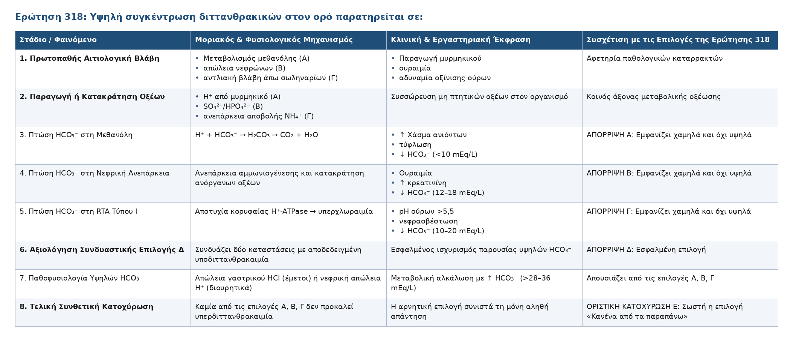
M5_Q318_TAB_02.png
📋 ΠΙΝΑΚΑΣ / ΣΧΗΜΑ (M5_Q318_TAB_03.png)
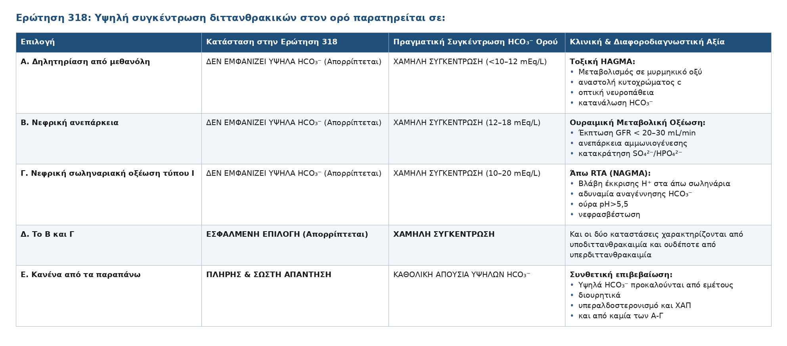
M5_Q318_TAB_03.png
Θέμα 319 (Seq 19)
Σύνολο εικόνων/πινάκων: 5
Στην κοκκιωμάτωση του Wegener μπορεί να προσβληθούν:
📷 ΚΛΙΝΙΚΗ ΕΙΚΟΝΑ / ΦΩΤΟΓΡΑΦΙΑ
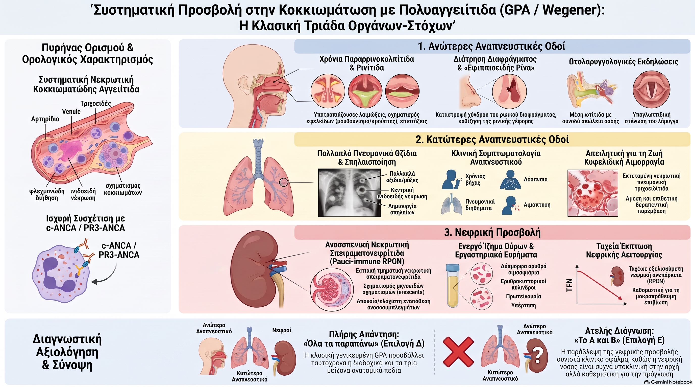
Κοκκιωματώση_με_Πολυαγγειίτιδα__Τριάδα_Προσβολής.png
📊 ΠΛΗΡΟΦΟΡΙΑΚΟ ΔΙΑΓΡΑΜΜΑ
Κοκκιωματώση_με_Πολυαγγειίτιδα__Τριάδα_Προσβολής.png
📋 ΠΙΝΑΚΑΣ / ΣΧΗΜΑ (M5_Q319_TAB_01.png)

M5_Q319_TAB_01.png
📋 ΠΙΝΑΚΑΣ / ΣΧΗΜΑ (M5_Q319_TAB_02.png)

M5_Q319_TAB_02.png
📋 ΠΙΝΑΚΑΣ / ΣΧΗΜΑ (M5_Q319_TAB_03.png)
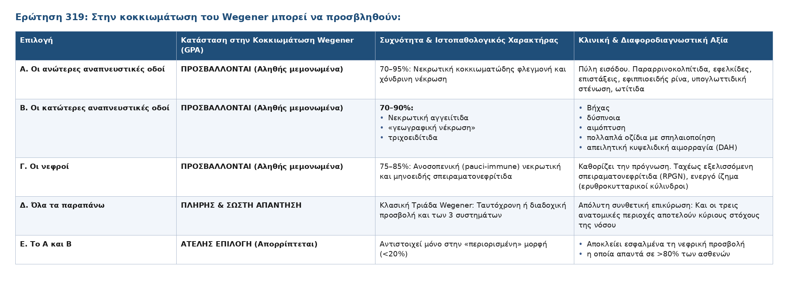
M5_Q319_TAB_03.png
Θέμα 320 (Seq 20)
Σύνολο εικόνων/πινάκων: 5
Ποιο από τα παρακάτω ισχύει στην κροταφική ή γιγαντοκυτταρική αρτηρίτιδα:
📷 ΚΛΙΝΙΚΗ ΕΙΚΟΝΑ / ΦΩΤΟΓΡΑΦΙΑ
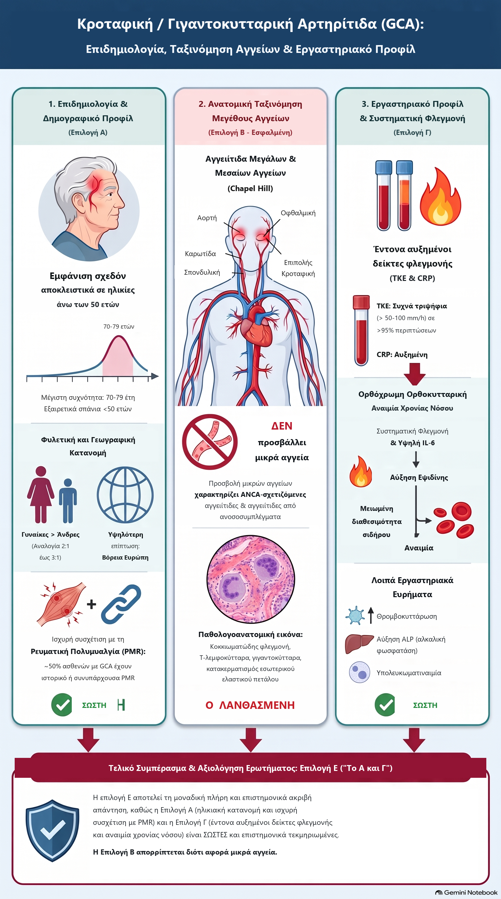
Κροταφική___Γιγαντοκυτταρική_Αρτηρίτιδα_(GCA).png
📊 ΠΛΗΡΟΦΟΡΙΑΚΟ ΔΙΑΓΡΑΜΜΑ
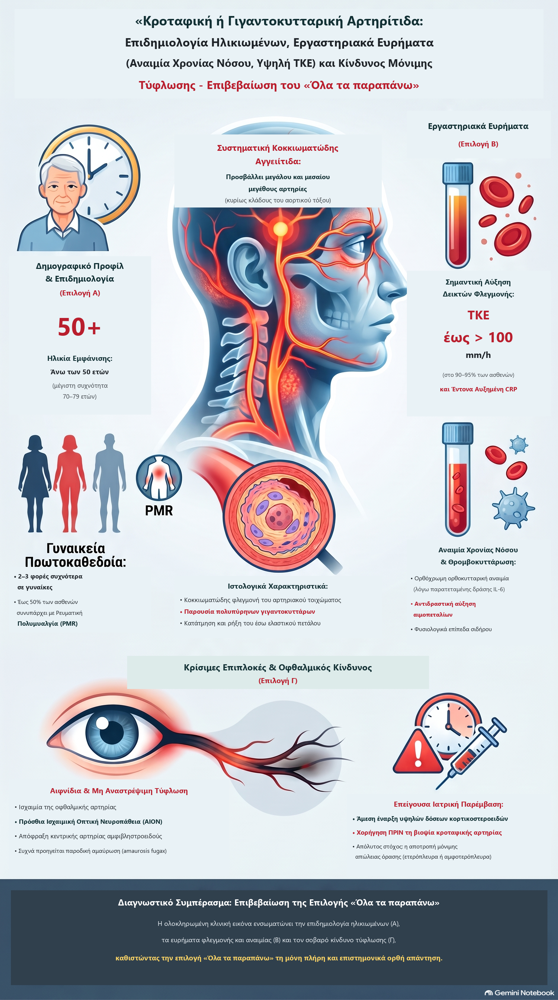
Γιγαντοκυτταρική_Αρτηρίτιδα__Ιατρικό_Γράφημα.png
📋 ΠΙΝΑΚΑΣ / ΣΧΗΜΑ (M5_Q320_TAB_01.png)
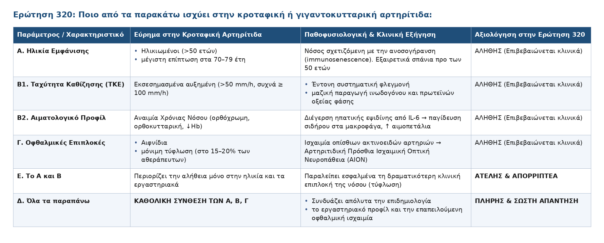
M5_Q320_TAB_01.png
📋 ΠΙΝΑΚΑΣ / ΣΧΗΜΑ (M5_Q320_TAB_02.png)
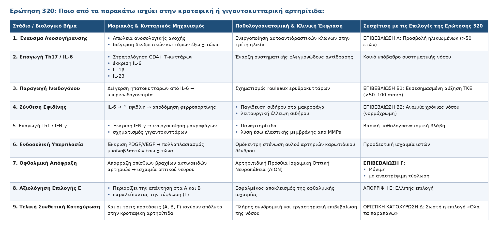
M5_Q320_TAB_02.png
📋 ΠΙΝΑΚΑΣ / ΣΧΗΜΑ (M5_Q320_TAB_03.png)
M5_Q320_TAB_03.png
Θέμα 321 (Seq 21)
Σύνολο εικόνων/πινάκων: 5
Ποιο από τα παρακάτω ισχύει στην κροταφική ή γιγαντοκυτταρική αρτηρίτιδα:
📷 ΚΛΙΝΙΚΗ ΕΙΚΟΝΑ / ΦΩΤΟΓΡΑΦΙΑ
Γιγαντοκυτταρική_Αρτηρίτιδα__Ιατρικό_Γράφημα.png
📊 ΠΛΗΡΟΦΟΡΙΑΚΟ ΔΙΑΓΡΑΜΜΑ
Κροταφική___Γιγαντοκυτταρική_Αρτηρίτιδα_(GCA).png
📋 ΠΙΝΑΚΑΣ / ΣΧΗΜΑ (M5_Q321_TAB_01.png)

M5_Q321_TAB_01.png
📋 ΠΙΝΑΚΑΣ / ΣΧΗΜΑ (M5_Q321_TAB_02.png)

M5_Q321_TAB_02.png
📋 ΠΙΝΑΚΑΣ / ΣΧΗΜΑ (M5_Q321_TAB_03.png)
M5_Q321_TAB_03.png
Θέμα 322 (Seq 22)
Σύνολο εικόνων/πινάκων: 5
Όλα τα παρακάτω χαρακτηρίζουν την οζώδη πολυαρτηρίτιδα, εκτός από:
📷 ΚΛΙΝΙΚΗ ΕΙΚΟΝΑ / ΦΩΤΟΓΡΑΦΙΑ
.png)
Κλασική_Οζώδης_Πολυαρτηρίτιδα_(PAN).png
📊 ΠΛΗΡΟΦΟΡΙΑΚΟ ΔΙΑΓΡΑΜΜΑ
 (1).png)
Κλασική_Οζώδης_Πολυαρτηρίτιδα_(PAN) (1).png
📋 ΠΙΝΑΚΑΣ / ΣΧΗΜΑ (M5_Q322_TAB_01.png)

M5_Q322_TAB_01.png
📋 ΠΙΝΑΚΑΣ / ΣΧΗΜΑ (M5_Q322_TAB_02.png)

M5_Q322_TAB_02.png
📋 ΠΙΝΑΚΑΣ / ΣΧΗΜΑ (M5_Q322_TAB_03.png)
M5_Q322_TAB_03.png
Θέμα 323 (Seq 23)
Σύνολο εικόνων/πινάκων: 5
Ποιο από τα παρακάτω χαρακτηρίζει την οζώδη πολυαρτηρίτιδα:
📷 ΚΛΙΝΙΚΗ ΕΙΚΟΝΑ / ΦΩΤΟΓΡΑΦΙΑ
Χαρακτηριστικά_Κλασικής_Οζώδους_Πολυαρτηρίτιδας_(PAN).png
📊 ΠΛΗΡΟΦΟΡΙΑΚΟ ΔΙΑΓΡΑΜΜΑ
 (1).png)
Χαρακτηριστικά_Κλασικής_Οζώδους_Πολυαρτηρίτιδας_(PAN) (1).png
📋 ΠΙΝΑΚΑΣ / ΣΧΗΜΑ (M5_Q323_TAB_01.png)
M5_Q323_TAB_01.png
📋 ΠΙΝΑΚΑΣ / ΣΧΗΜΑ (M5_Q323_TAB_02.png)

M5_Q323_TAB_02.png
📋 ΠΙΝΑΚΑΣ / ΣΧΗΜΑ (M5_Q323_TAB_03.png)
M5_Q323_TAB_03.png
Θέμα 324 (Seq 24)
Σύνολο εικόνων/πινάκων: 5
Ποιο από τα παρακάτω χαρακτηρίζει την οζώδη πολυαρτηρίτιδα:
📷 ΚΛΙΝΙΚΗ ΕΙΚΟΝΑ / ΦΩΤΟΓΡΑΦΙΑ
Χαρακτηριστικά_Κλασικής_Οζώδους_Πολυαρτηρίτιδας_(PAN).png
📊 ΠΛΗΡΟΦΟΡΙΑΚΟ ΔΙΑΓΡΑΜΜΑ
Χαρακτηριστικά_Κλασικής_Οζώδους_Πολυαρτηρίτιδας_(PAN).png
📋 ΠΙΝΑΚΑΣ / ΣΧΗΜΑ (M5_Q324_TAB_01.png)

M5_Q324_TAB_01.png
📋 ΠΙΝΑΚΑΣ / ΣΧΗΜΑ (M5_Q324_TAB_02.png)
M5_Q324_TAB_02.png
📋 ΠΙΝΑΚΑΣ / ΣΧΗΜΑ (M5_Q324_TAB_03.png)
M5_Q324_TAB_03.png
Θέμα 325 (Seq 25)
Σύνολο εικόνων/πινάκων: 5
Ένδεια βιταμίνης Β12 μπορεί να παρατηρηθεί:
📷 ΚΛΙΝΙΚΗ ΕΙΚΟΝΑ / ΦΩΤΟΓΡΑΦΙΑ
Ένδεια_Βιταμίνης_B12__Αίτια.png
📊 ΠΛΗΡΟΦΟΡΙΑΚΟ ΔΙΑΓΡΑΜΜΑ
Ένδεια_Βιταμίνης_B12__Αίτια.png
📋 ΠΙΝΑΚΑΣ / ΣΧΗΜΑ (M5_Q325_TAB_01.png)

M5_Q325_TAB_01.png
📋 ΠΙΝΑΚΑΣ / ΣΧΗΜΑ (M5_Q325_TAB_02.png)

M5_Q325_TAB_02.png
📋 ΠΙΝΑΚΑΣ / ΣΧΗΜΑ (M5_Q325_TAB_03.png)

M5_Q325_TAB_03.png
Θέμα 326 (Seq 26)
Σύνολο εικόνων/πινάκων: 5
Ένδεια βιταμίνης Β12 μπορεί να παρατηρηθεί:
📷 ΚΛΙΝΙΚΗ ΕΙΚΟΝΑ / ΦΩΤΟΓΡΑΦΙΑ
Διαφορική_Διάγνωση_Έλλειψης_Βιταμίνης_B12.png
📊 ΠΛΗΡΟΦΟΡΙΑΚΟ ΔΙΑΓΡΑΜΜΑ
Διαφορική_Διάγνωση_Έλλειψης_Βιταμίνης_B12.png
📋 ΠΙΝΑΚΑΣ / ΣΧΗΜΑ (M5_Q326_TAB_01.png)

M5_Q326_TAB_01.png
📋 ΠΙΝΑΚΑΣ / ΣΧΗΜΑ (M5_Q326_TAB_02.png)
M5_Q326_TAB_02.png
📋 ΠΙΝΑΚΑΣ / ΣΧΗΜΑ (M5_Q326_TAB_03.png)
M5_Q326_TAB_03.png
Θέμα 327 (Seq 27)
Σύνολο εικόνων/πινάκων: 5
Στη σιδηροπενική αναιμία:
📷 ΚΛΙΝΙΚΗ ΕΙΚΟΝΑ / ΦΩΤΟΓΡΑΦΙΑ
Σιδηροπενική_Αναιμία__Διαγνωστικά_Κριτήρια.png
📊 ΠΛΗΡΟΦΟΡΙΑΚΟ ΔΙΑΓΡΑΜΜΑ
Σιδηροπενική_Αναιμία__Διαγνωστικά_Κριτήρια.png
📋 ΠΙΝΑΚΑΣ / ΣΧΗΜΑ (M5_Q327_TAB_01.png)

M5_Q327_TAB_01.png
📋 ΠΙΝΑΚΑΣ / ΣΧΗΜΑ (M5_Q327_TAB_02.png)
M5_Q327_TAB_02.png
📋 ΠΙΝΑΚΑΣ / ΣΧΗΜΑ (M5_Q327_TAB_03.png)
M5_Q327_TAB_03.png
Θέμα 328 (Seq 28)
Σύνολο εικόνων/πινάκων: 6
Όλα τα παρακάτω αποτελούν χαρακτηριστικά της αμυλοείδωσης, εκτός από ένα:
📷 ΚΛΙΝΙΚΗ ΕΙΚΟΝΑ / ΦΩΤΟΓΡΑΦΙΑ

Συστηματική_Αμυλοείδωση__Διαγνωστικός_Οδηγός.png
📊 ΠΛΗΡΟΦΟΡΙΑΚΟ ΔΙΑΓΡΑΜΜΑ
Συστηματική_Αμυλοείδωση__Διαγνωστικός_Οδηγός.png
📋 ΠΙΝΑΚΑΣ / ΣΧΗΜΑ (M5_Q328_TAB_01.png)
M5_Q328_TAB_01.png
📋 ΠΙΝΑΚΑΣ / ΣΧΗΜΑ (M5_Q328_TAB_02.png)
M5_Q328_TAB_02.png
📋 ΠΙΝΑΚΑΣ / ΣΧΗΜΑ (M5_Q328_TAB_03.png)

M5_Q328_TAB_03.png
📋 ΠΙΝΑΚΑΣ / ΣΧΗΜΑ (M5_Q328_TAB_04.png)
M5_Q328_TAB_04.png
Θέμα 329 (Seq 29)
Σύνολο εικόνων/πινάκων: 5
Αποτελούν χαρακτηριστικά της αμυλοείδωσης:
📷 ΚΛΙΝΙΚΗ ΕΙΚΟΝΑ / ΦΩΤΟΓΡΑΦΙΑ

Συστηματική_Αμυλοείδωση__Διαφοροδιάγνωση_και_Εκδηλώσεις.png
📊 ΠΛΗΡΟΦΟΡΙΑΚΟ ΔΙΑΓΡΑΜΜΑ
Συστηματική_Αμυλοείδωση__Διαφοροδιάγνωση_και_Εκδηλώσεις.png
📋 ΠΙΝΑΚΑΣ / ΣΧΗΜΑ (M5_Q329_TAB_01.png)

M5_Q329_TAB_01.png
📋 ΠΙΝΑΚΑΣ / ΣΧΗΜΑ (M5_Q329_TAB_02.png)
M5_Q329_TAB_02.png
📋 ΠΙΝΑΚΑΣ / ΣΧΗΜΑ (M5_Q329_TAB_03.png)

M5_Q329_TAB_03.png
Θέμα 330 (Seq 30)
Σύνολο εικόνων/πινάκων: 5
Αποτελούν χαρακτηριστικά της αμυλοείδωσης:
📷 ΚΛΙΝΙΚΗ ΕΙΚΟΝΑ / ΦΩΤΟΓΡΑΦΙΑ
Συστηματική_Αμυλοείδωση__Κλινικό_Φάσμα.png
📊 ΠΛΗΡΟΦΟΡΙΑΚΟ ΔΙΑΓΡΑΜΜΑ
Συστηματική_Αμυλοείδωση__Κλινικό_Φάσμα.png
📋 ΠΙΝΑΚΑΣ / ΣΧΗΜΑ (M5_Q330_TAB_01.png)

M5_Q330_TAB_01.png
📋 ΠΙΝΑΚΑΣ / ΣΧΗΜΑ (M5_Q330_TAB_02.png)

M5_Q330_TAB_02.png
📋 ΠΙΝΑΚΑΣ / ΣΧΗΜΑ (M5_Q330_TAB_03.png)

M5_Q330_TAB_03.png
Θέμα 331 (Seq 31)
Σύνολο εικόνων/πινάκων: 5
Όλα τα παρακάτω αποτελούν χαρακτηριστικά της αμυλοείδωσης, εκτός από ένα:
📷 ΚΛΙΝΙΚΗ ΕΙΚΟΝΑ / ΦΩΤΟΓΡΑΦΙΑ
Συστηματική_Αμυλοείδωση__Πολυσυστηματική_Χαρτογράφηση.png
📊 ΠΛΗΡΟΦΟΡΙΑΚΟ ΔΙΑΓΡΑΜΜΑ
Συστηματική_Αμυλοείδωση__Πολυσυστηματική_Χαρτογράφηση.png
📋 ΠΙΝΑΚΑΣ / ΣΧΗΜΑ (M5_Q331_TAB_01.png)
M5_Q331_TAB_01.png
📋 ΠΙΝΑΚΑΣ / ΣΧΗΜΑ (M5_Q331_TAB_02.png)
M5_Q331_TAB_02.png
📋 ΠΙΝΑΚΑΣ / ΣΧΗΜΑ (M5_Q331_TAB_03.png)
M5_Q331_TAB_03.png
Θέμα 332 (Seq 32)
Σύνολο εικόνων/πινάκων: 5
Το σύνδρομο Horner χαρακτηρίζεται από όλα τα παρακάτω, εκτός από ένα:
📷 ΚΛΙΝΙΚΗ ΕΙΚΟΝΑ / ΦΩΤΟΓΡΑΦΙΑ
Σύνδρομο_Horner__Ανατομία_και_Διάγνωση.png
📊 ΠΛΗΡΟΦΟΡΙΑΚΟ ΔΙΑΓΡΑΜΜΑ
Σύνδρομο_Horner__Διαγνωστικός_Οδηγός.png
📋 ΠΙΝΑΚΑΣ / ΣΧΗΜΑ (M5_Q332_TAB_01.png)
M5_Q332_TAB_01.png
📋 ΠΙΝΑΚΑΣ / ΣΧΗΜΑ (M5_Q332_TAB_02.png)
M5_Q332_TAB_02.png
📋 ΠΙΝΑΚΑΣ / ΣΧΗΜΑ (M5_Q332_TAB_03.png)
M5_Q332_TAB_03.png
Θέμα 333 (Seq 33)
Σύνολο εικόνων/πινάκων: 5
Το σύνδρομο Horner χαρακτηρίζεται από όλα τα παρακάτω, εκτός από ένα:
📷 ΚΛΙΝΙΚΗ ΕΙΚΟΝΑ / ΦΩΤΟΓΡΑΦΙΑ
Σύνδρομο_Horner__Διαγνωστικός_Οδηγός.png
📊 ΠΛΗΡΟΦΟΡΙΑΚΟ ΔΙΑΓΡΑΜΜΑ
Σύνδρομο_Horner__Ανατομία_και_Διάγνωση.png
📋 ΠΙΝΑΚΑΣ / ΣΧΗΜΑ (M5_Q333_TAB_01.png)

M5_Q333_TAB_01.png
📋 ΠΙΝΑΚΑΣ / ΣΧΗΜΑ (M5_Q333_TAB_02.png)

M5_Q333_TAB_02.png
📋 ΠΙΝΑΚΑΣ / ΣΧΗΜΑ (M5_Q333_TAB_03.png)
M5_Q333_TAB_03.png
Θέμα 334 (Seq 34)
Σύνολο εικόνων/πινάκων: 6
Τα μακρολίδια έχουν όλα τα παρακάτω χαρακτηριστικά εκτός από ένα:
📷 ΚΛΙΝΙΚΗ ΕΙΚΟΝΑ / ΦΩΤΟΓΡΑΦΙΑ
Μακρολίδια__Μηχανισμός,_Αλληλεπιδράσεις_και_Τοξικότητα.png
📊 ΠΛΗΡΟΦΟΡΙΑΚΟ ΔΙΑΓΡΑΜΜΑ
Μακρολίδια__Μηχανισμός,_Αλληλεπιδράσεις_και_Τοξικότητα.png
📋 ΠΙΝΑΚΑΣ / ΣΧΗΜΑ (M5_Q334_TAB_01.png)
M5_Q334_TAB_01.png
📋 ΠΙΝΑΚΑΣ / ΣΧΗΜΑ (M5_Q334_TAB_02.png)

M5_Q334_TAB_02.png
📋 ΠΙΝΑΚΑΣ / ΣΧΗΜΑ (M5_Q334_TAB_03.png)
M5_Q334_TAB_03.png
📋 ΠΙΝΑΚΑΣ / ΣΧΗΜΑ (M5_Q334_TAB_04.png)

M5_Q334_TAB_04.png
Θέμα 335 (Seq 35)
Σύνολο εικόνων/πινάκων: 5
Εμφάνιση δερματικού εξανθήματος παρατηρείται τυπικά σε:
📷 ΚΛΙΝΙΚΗ ΕΙΚΟΝΑ / ΦΩΤΟΓΡΑΦΙΑ
Έκθεση_σε_Αμινοπενικιλλίνες_και_Εξανθήματα.png
📊 ΠΛΗΡΟΦΟΡΙΑΚΟ ΔΙΑΓΡΑΜΜΑ
Έκθεση_σε_Αμινοπενικιλλίνες_και_Εξανθήματα.png
📋 ΠΙΝΑΚΑΣ / ΣΧΗΜΑ (M5_Q335_TAB_01.png)

M5_Q335_TAB_01.png
📋 ΠΙΝΑΚΑΣ / ΣΧΗΜΑ (M5_Q335_TAB_02.png)
M5_Q335_TAB_02.png
📋 ΠΙΝΑΚΑΣ / ΣΧΗΜΑ (M5_Q335_TAB_03.png)

M5_Q335_TAB_03.png
Θέμα 337 (Seq 36)
Σύνολο εικόνων/πινάκων: 5
Διαβητικός ασθενής με pH 7.28, PCO2 40 mmhg και HCO3- 18 mEq/L έχει:
📷 ΚΛΙΝΙΚΗ ΕΙΚΟΝΑ / ΦΩΤΟΓΡΑΦΙΑ
Αξιολόγηση_Αερίων_Αίματος__Διαβητική_Κετοξέωση.png
📊 ΠΛΗΡΟΦΟΡΙΑΚΟ ΔΙΑΓΡΑΜΜΑ
Αξιολόγηση_Αερίων_Αίματος__Διαβητική_Κετοξέωση.png
📋 ΠΙΝΑΚΑΣ / ΣΧΗΜΑ (M5_Q337_TAB_01.png)
M5_Q337_TAB_01.png
📋 ΠΙΝΑΚΑΣ / ΣΧΗΜΑ (M5_Q337_TAB_02.png)
M5_Q337_TAB_02.png
📋 ΠΙΝΑΚΑΣ / ΣΧΗΜΑ (M5_Q337_TAB_03.png)
M5_Q337_TAB_03.png
Θέμα 338 (Seq 37)
Σύνολο εικόνων/πινάκων: 5
Οι ασθενείς με λεπτοσπείρωση εμφανίζουν:
📷 ΚΛΙΝΙΚΗ ΕΙΚΟΝΑ / ΦΩΤΟΓΡΑΦΙΑ
Ανάλυση_Λεπτοσπείρωσης_και_Ερώτησης_338.png
📊 ΠΛΗΡΟΦΟΡΙΑΚΟ ΔΙΑΓΡΑΜΜΑ
Ανάλυση_Λεπτοσπείρωσης_και_Ερώτησης_338.png
📋 ΠΙΝΑΚΑΣ / ΣΧΗΜΑ (M5_Q338_TAB_01.png)

M5_Q338_TAB_01.png
📋 ΠΙΝΑΚΑΣ / ΣΧΗΜΑ (M5_Q338_TAB_02.png)

M5_Q338_TAB_02.png
📋 ΠΙΝΑΚΑΣ / ΣΧΗΜΑ (M5_Q338_TAB_03.png)

M5_Q338_TAB_03.png
Θέμα 339 (Seq 38)
Σύνολο εικόνων/πινάκων: 6
Το φάρμακο εκλογής σε ασθενή με εξωνοσοκομειακή πνευμονία είναι:
📷 ΚΛΙΝΙΚΗ ΕΙΚΟΝΑ / ΦΩΤΟΓΡΑΦΙΑ
Θεραπεία_Πνευμονίας_Κοινότητας_και_Μακρολίδια.png
📊 ΠΛΗΡΟΦΟΡΙΑΚΟ ΔΙΑΓΡΑΜΜΑ
Θεραπεία_Πνευμονίας_Κοινότητας_και_Μακρολίδια.png
📋 ΠΙΝΑΚΑΣ / ΣΧΗΜΑ (M5_Q339_TAB_01.png)

M5_Q339_TAB_01.png
📋 ΠΙΝΑΚΑΣ / ΣΧΗΜΑ (M5_Q339_TAB_02.png)
M5_Q339_TAB_02.png
📋 ΠΙΝΑΚΑΣ / ΣΧΗΜΑ (M5_Q339_TAB_03.png)

M5_Q339_TAB_03.png
📋 ΠΙΝΑΚΑΣ / ΣΧΗΜΑ (M5_Q339_TAB_04.png)

M5_Q339_TAB_04.png
Θέμα 340 (Seq 39)
Σύνολο εικόνων/πινάκων: 5
Όλα τα παρακάτω είναι σωστά για τον ρευματοειδή παράγοντα εκτός από ένα:
📷 ΚΛΙΝΙΚΗ ΕΙΚΟΝΑ / ΦΩΤΟΓΡΑΦΙΑ
Ρευματοειδής_Παράγοντας__Ανοσολογικό_Προφίλ.png
📊 ΠΛΗΡΟΦΟΡΙΑΚΟ ΔΙΑΓΡΑΜΜΑ
Ρευματοειδής_Παράγοντας__Ανοσολογικό_Προφίλ.png
📋 ΠΙΝΑΚΑΣ / ΣΧΗΜΑ (M5_Q340_TAB_01.png)

M5_Q340_TAB_01.png
📋 ΠΙΝΑΚΑΣ / ΣΧΗΜΑ (M5_Q340_TAB_02.png)
M5_Q340_TAB_02.png
📋 ΠΙΝΑΚΑΣ / ΣΧΗΜΑ (M5_Q340_TAB_03.png)

M5_Q340_TAB_03.png
Θέμα 341 (Seq 40)
Σύνολο εικόνων/πινάκων: 5
Η πνευμονία από μυκόπλασμα χαρακτηρίζεται από όλα τα παρακάτω, εκτός από ένα:
📷 ΚΛΙΝΙΚΗ ΕΙΚΟΝΑ / ΦΩΤΟΓΡΑΦΙΑ
Πνευμονία_από_Mycoplasma_pneumoniae.png
📊 ΠΛΗΡΟΦΟΡΙΑΚΟ ΔΙΑΓΡΑΜΜΑ
Πνευμονία_από_Mycoplasma_pneumoniae.png
📋 ΠΙΝΑΚΑΣ / ΣΧΗΜΑ (M5_Q341_TAB_01.png)

M5_Q341_TAB_01.png
📋 ΠΙΝΑΚΑΣ / ΣΧΗΜΑ (M5_Q341_TAB_02.png)
M5_Q341_TAB_02.png
📋 ΠΙΝΑΚΑΣ / ΣΧΗΜΑ (M5_Q341_TAB_03.png)

M5_Q341_TAB_03.png
Θέμα 342 (Seq 41)
Σύνολο εικόνων/πινάκων: 5
Ο πυρετός του τυφοειδούς πυρετού είναι:
📷 ΚΛΙΝΙΚΗ ΕΙΚΟΝΑ / ΦΩΤΟΓΡΑΦΙΑ
Τυφοειδής_Πυρετός__Κλινική_Εικόνα___Διάγνωση.png
📊 ΠΛΗΡΟΦΟΡΙΑΚΟ ΔΙΑΓΡΑΜΜΑ
Τυφοειδής_Πυρετός__Κλινική_Εικόνα___Διάγνωση.png
📋 ΠΙΝΑΚΑΣ / ΣΧΗΜΑ (M5_Q342_TAB_01.png)

M5_Q342_TAB_01.png
📋 ΠΙΝΑΚΑΣ / ΣΧΗΜΑ (M5_Q342_TAB_02.png)
M5_Q342_TAB_02.png
📋 ΠΙΝΑΚΑΣ / ΣΧΗΜΑ (M5_Q342_TAB_03.png)

M5_Q342_TAB_03.png
Θέμα 342 (Seq 42)
Σύνολο εικόνων/πινάκων: 5
Ο πυρετός του τυφοειδούς πυρετού είναι:
📷 ΚΛΙΝΙΚΗ ΕΙΚΟΝΑ / ΦΩΤΟΓΡΑΦΙΑ
Τυφοειδής_Πυρετός__Κλινική_Εικόνα___Διάγνωση.png
📊 ΠΛΗΡΟΦΟΡΙΑΚΟ ΔΙΑΓΡΑΜΜΑ
Τυφοειδής_Πυρετός__Κλινική_Εικόνα___Διάγνωση.png
📋 ΠΙΝΑΚΑΣ / ΣΧΗΜΑ (M5_Q342B_TAB_01.png)
M5_Q342B_TAB_01.png
📋 ΠΙΝΑΚΑΣ / ΣΧΗΜΑ (M5_Q342B_TAB_02.png)

M5_Q342B_TAB_02.png
📋 ΠΙΝΑΚΑΣ / ΣΧΗΜΑ (M5_Q342B_TAB_03.png)

M5_Q342B_TAB_03.png
Θέμα 343 (Seq 43)
Σύνολο εικόνων/πινάκων: 5
Ο καλύτερος τρόπος για τη διάγνωση του τυφοειδούς πυρετού την πρώτη εβδομάδα της νόσου είναι:
📷 ΚΛΙΝΙΚΗ ΕΙΚΟΝΑ / ΦΩΤΟΓΡΑΦΙΑ
Διαγνωστική_Προσπέλαση_Τυφοειδούς_Πυρετού.png
📊 ΠΛΗΡΟΦΟΡΙΑΚΟ ΔΙΑΓΡΑΜΜΑ
Τυφοειδής_Πυρετός__Κλινική_Διάγνωση.png
📋 ΠΙΝΑΚΑΣ / ΣΧΗΜΑ (M5_Q343_TAB_01.png)

M5_Q343_TAB_01.png
📋 ΠΙΝΑΚΑΣ / ΣΧΗΜΑ (M5_Q343_TAB_02.png)
M5_Q343_TAB_02.png
📋 ΠΙΝΑΚΑΣ / ΣΧΗΜΑ (M5_Q343_TAB_03.png)
M5_Q343_TAB_03.png
Θέμα 344 (Seq 44)
Σύνολο εικόνων/πινάκων: 5
Όλα τα παρακάτω χαρακτηρίζουν τη σιγκέλλωση, εκτός από ένα:
📷 ΚΛΙΝΙΚΗ ΕΙΚΟΝΑ / ΦΩΤΟΓΡΑΦΙΑ
Σιγκέλλωση__Μικροβιολογικό_και_Κλινικό_Προφίλ.png
📊 ΠΛΗΡΟΦΟΡΙΑΚΟ ΔΙΑΓΡΑΜΜΑ
Σιγκέλλωση__Μικροβιολογικό_και_Κλινικό_Προφίλ.png
📋 ΠΙΝΑΚΑΣ / ΣΧΗΜΑ (M5_Q344_TAB_01.png)
M5_Q344_TAB_01.png
📋 ΠΙΝΑΚΑΣ / ΣΧΗΜΑ (M5_Q344_TAB_02.png)

M5_Q344_TAB_02.png
📋 ΠΙΝΑΚΑΣ / ΣΧΗΜΑ (M5_Q344_TAB_03.png)

M5_Q344_TAB_03.png
Θέμα 345 (Seq 45)
Σύνολο εικόνων/πινάκων: 6
Άτυπα λεμφοκύτταρα είναι δυνατόν να βρεθούν σε όλα τα παρακάτω, εκτός από ένα:
📷 ΚΛΙΝΙΚΗ ΕΙΚΟΝΑ / ΦΩΤΟΓΡΑΦΙΑ
Άτυπα_Λεμφοκύτταρα_και_Διαφορική_Διάγνωση.png
📊 ΠΛΗΡΟΦΟΡΙΑΚΟ ΔΙΑΓΡΑΜΜΑ
Άτυπα_Λεμφοκύτταρα_και_Διαφορική_Διάγνωση.png
📋 ΠΙΝΑΚΑΣ / ΣΧΗΜΑ (M5_Q345_TAB_01.png)

M5_Q345_TAB_01.png
📋 ΠΙΝΑΚΑΣ / ΣΧΗΜΑ (M5_Q345_TAB_02.png)

M5_Q345_TAB_02.png
📋 ΠΙΝΑΚΑΣ / ΣΧΗΜΑ (M5_Q345_TAB_03.png)

M5_Q345_TAB_03.png
📋 ΠΙΝΑΚΑΣ / ΣΧΗΜΑ (M5_Q345_TAB_04.png)
M5_Q345_TAB_04.png
Θέμα 346 (Seq 46)
Σύνολο εικόνων/πινάκων: 5
Όλες οι παρακάτω νεοπλασίες μπορεί να εκδηλωθούν ως πυρετός αγνώστου αιτιολογίας, εκτός από:
📷 ΚΛΙΝΙΚΗ ΕΙΚΟΝΑ / ΦΩΤΟΓΡΑΦΙΑ
Νεοπλάσματα_και_Πυρετός_Αγνώστου_Αιτιολογίας.png
📊 ΠΛΗΡΟΦΟΡΙΑΚΟ ΔΙΑΓΡΑΜΜΑ
Νεοπλάσματα_και_Πυρετός_Αγνώστου_Αιτιολογίας.png
📋 ΠΙΝΑΚΑΣ / ΣΧΗΜΑ (M5_Q346_TAB_01.png)
M5_Q346_TAB_01.png
📋 ΠΙΝΑΚΑΣ / ΣΧΗΜΑ (M5_Q346_TAB_02.png)

M5_Q346_TAB_02.png
📋 ΠΙΝΑΚΑΣ / ΣΧΗΜΑ (M5_Q346_TAB_03.png)
M5_Q346_TAB_03.png
Θέμα 347 (Seq 47)
Σύνολο εικόνων/πινάκων: 5
Όλα τα παρακάτω είναι δυνατόν να παρατηρηθούν στην υποξεία βακτηριδιακή ενδοκαρδίτιδα, εκτός από:
📷 ΚΛΙΝΙΚΗ ΕΙΚΟΝΑ / ΦΩΤΟΓΡΑΦΙΑ
Κλινική_Εικόνα_Υποξείας_Βακτηριακής_Ενδοκαρδίτιδας.png
📊 ΠΛΗΡΟΦΟΡΙΑΚΟ ΔΙΑΓΡΑΜΜΑ
Κλινική_Εικόνα_Υποξείας_Βακτηριακής_Ενδοκαρδίτιδας.png
📋 ΠΙΝΑΚΑΣ / ΣΧΗΜΑ (M5_Q347_TAB_01.png)

M5_Q347_TAB_01.png
📋 ΠΙΝΑΚΑΣ / ΣΧΗΜΑ (M5_Q347_TAB_02.png)
M5_Q347_TAB_02.png
📋 ΠΙΝΑΚΑΣ / ΣΧΗΜΑ (M5_Q347_TAB_03.png)

M5_Q347_TAB_03.png
Θέμα 348 (Seq 48)
Σύνολο εικόνων/πινάκων: 5
Ποιο από τα παρακάτω μικρόβια είναι υπεύθυνο για τη μηνιγγίτιδα που χαρακτηρίζεται από επιδημίες, ταχεία εξέλιξη, καταπληξία και εξάνθημα:
📷 ΚΛΙΝΙΚΗ ΕΙΚΟΝΑ / ΦΩΤΟΓΡΑΦΙΑ
Ιατρικό_γράφημα_για_μηνιγγιτιδοκοκκική_νόσο.png
📊 ΠΛΗΡΟΦΟΡΙΑΚΟ ΔΙΑΓΡΑΜΜΑ
Ιατρικό_γράφημα_για_μηνιγγιτιδοκοκκική_νόσο.png
📋 ΠΙΝΑΚΑΣ / ΣΧΗΜΑ (M5_Q348_TAB_01.png)
M5_Q348_TAB_01.png
📋 ΠΙΝΑΚΑΣ / ΣΧΗΜΑ (M5_Q348_TAB_02.png)

M5_Q348_TAB_02.png
📋 ΠΙΝΑΚΑΣ / ΣΧΗΜΑ (M5_Q348_TAB_03.png)

M5_Q348_TAB_03.png
Θέμα 349 (Seq 49)
Σύνολο εικόνων/πινάκων: 5
Η εξέταση του ΕΝΥ στη βακτηριδιακή μηνιγγίτιδα εμφανίζει όλα τα παρακάτω, εκτός από ένα:
📷 ΚΛΙΝΙΚΗ ΕΙΚΟΝΑ / ΦΩΤΟΓΡΑΦΙΑ
Διάγνωση_Μηνιγγίτιδας_από_ΕΝΥ.png
📊 ΠΛΗΡΟΦΟΡΙΑΚΟ ΔΙΑΓΡΑΜΜΑ
Διάγνωση_Μηνιγγίτιδας_από_ΕΝΥ.png
📋 ΠΙΝΑΚΑΣ / ΣΧΗΜΑ (M5_Q349_TAB_01.png)

M5_Q349_TAB_01.png
📋 ΠΙΝΑΚΑΣ / ΣΧΗΜΑ (M5_Q349_TAB_02.png)
M5_Q349_TAB_02.png
📋 ΠΙΝΑΚΑΣ / ΣΧΗΜΑ (M5_Q349_TAB_03.png)

M5_Q349_TAB_03.png
Θέμα 350 (Seq 50)
Σύνολο εικόνων/πινάκων: 5
Ποιες από τις παρακάτω εξετάσεις είναι η καλύτερη εξέταση για την οριστική διάγνωση της βρουκέλλωσης:
📷 ΚΛΙΝΙΚΗ ΕΙΚΟΝΑ / ΦΩΤΟΓΡΑΦΙΑ
Διαγνωστική_προσέγγιση_και_χαρακτηριστικά_βρουκέλλωσης.png
📊 ΠΛΗΡΟΦΟΡΙΑΚΟ ΔΙΑΓΡΑΜΜΑ
Διαγνωστική_προσέγγιση_και_χαρακτηριστικά_βρουκέλλωσης.png
📋 ΠΙΝΑΚΑΣ / ΣΧΗΜΑ (M5_Q350_TAB_01.png)

M5_Q350_TAB_01.png
📋 ΠΙΝΑΚΑΣ / ΣΧΗΜΑ (M5_Q350_TAB_02.png)
M5_Q350_TAB_02.png
📋 ΠΙΝΑΚΑΣ / ΣΧΗΜΑ (M5_Q350_TAB_03.png)

M5_Q350_TAB_03.png